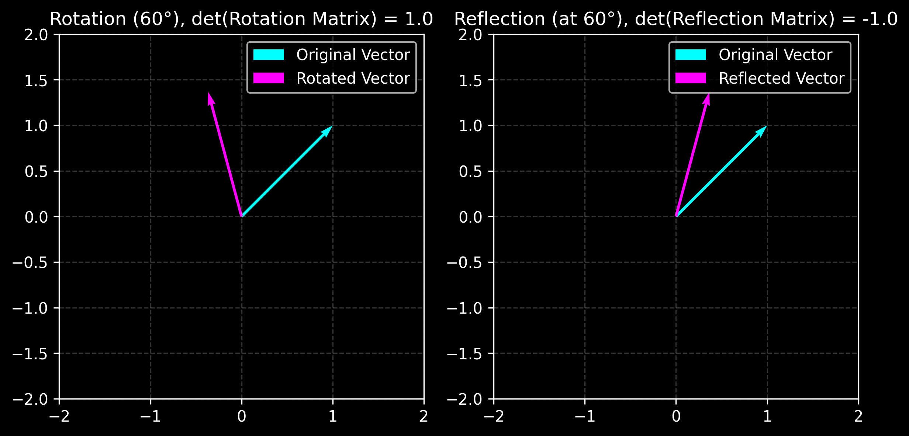

Orthogonal Matrix#
A matrix \(Q \in \mathbb{R}^{n \times n}\) is orthogonal if:
\[
Q^T Q = Q Q^T = I
\]
where \(I\) is the identity matrix of order \(n\).
Properties of Orthogonal Matrices#
Inverse:
\[
Q^{-1} = Q^T
\]
Determinant:
\[
\text{det}(Q) = \pm 1
\]
Norm Preservation:
\[
||Q \mathbf{x}|| = ||\mathbf{x}||, \quad \forall \mathbf{x} \in \mathbb{R}^n
\]
Orthogonality of Rows and Columns:
\[
Q^T Q = I, \quad Q Q^T = I
\]
Product:
\[
(Q_1 Q_2)^T (Q_1 Q_2) = I, \quad \forall Q_1, Q_2 \text{ orthogonal}
\]
Rotation Matrices are Orthogonal Matrices#
For rotation matrices \(R\), we have:
\[
R^T R = R R^T = I
\]
Reflection Matrices are Orthogonal Matrices#
For reflection matrices \(R\), we also have:
\[
R^T R = I, \quad \text{det}(R) = -1
\]
import numpy as np
import matplotlib.pyplot as plt
plt.style.use('dark_background')
def plot_transformed_vector(ax, matrix, vector, transform_name):
transformed_vector = matrix @ vector
ax.quiver(0, 0, vector[0], vector[1], angles='xy', scale_units='xy', scale=1, color='cyan', label='Original Vector')
ax.quiver(0, 0, transformed_vector[0], transformed_vector[1], angles='xy', scale_units='xy', scale=1, color='magenta', label=f'{transform_name} Vector')
ax.set_xlim(-2, 2)
ax.set_ylim(-2, 2)
ax.set_aspect('equal')
ax.grid(True, alpha=0.2, linestyle='--')
ax.legend()
# Define the original vector
vector = np.array([1, 1])
# Rotation matrix
theta_deg = 60
theta = np.radians(theta_deg)
rotation_matrix = np.array([[np.cos(theta), -np.sin(theta)],
[np.sin(theta), np.cos(theta)]])
# Reflection matrix (across a line at 60 degrees with x-axis)
reflection_theta_deg = 60
reflection_theta = np.radians(reflection_theta_deg) # angle of reflection line with x-axis
reflection_matrix = np.array([[np.cos(2 * reflection_theta), np.sin(2 * reflection_theta)],
[np.sin(2 * reflection_theta), -np.cos(2 * reflection_theta)]])
# Create a figure with two subplots side by side
fig, axes = plt.subplots(1, 2, figsize=(8, 4), dpi=300)
plot_transformed_vector(axes[0], rotation_matrix, vector, 'Rotated')
plot_transformed_vector(axes[1], reflection_matrix, vector, 'Reflected')
axes[0].set_title(f'Rotation ({theta_deg}°), det(Rotation Matrix) = {np.linalg.det(rotation_matrix)}')
axes[1].set_title(f'Reflection (at {reflection_theta_deg}°), det(Reflection Matrix) = {np.round(np.linalg.det(reflection_matrix), 1)}')
plt.tight_layout()
plt.savefig('orthogonality.png', dpi=300)
plt.show()

rotation_matrix.T @ rotation_matrix
array([[ 1.00000000e+00, -1.48741681e-17],
[-1.48741681e-17, 1.00000000e+00]])
reflection_matrix.T @ reflection_matrix
array([[ 1.00000000e+00, -2.57628149e-17],
[-2.57628149e-17, 1.00000000e+00]])
np.linalg.det(rotation_matrix), np.linalg.det(reflection_matrix)
(1.0, -1.0)